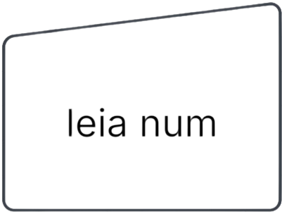
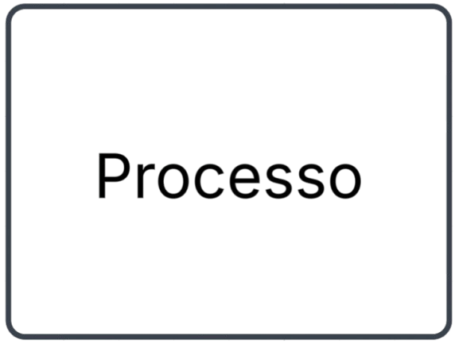
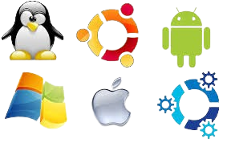

Lógica Computacional
O que são Fluxogramas:
Fluxogramas são diagramas usados para representar visualmente o passo a passo de um processo, de uma atividade ou de uma lógica. Eles transformam ações e decisões em formas simples, como setas, retângulos, losangos e círculos, facilitando a compreensão do que deve acontecer em cada etapa.
Este Representa Início ou Fim do Programa:
Este Representa Leitura de Dados:
Este Representa decisão/condição se ele tiver ele vai ser executado se não ele passa para o próximo
Este Representa Processo aonde vai ser executado
O que são Algoritimos:
Um algoritmo é como alguém te guiando calmamente:
“Faça isso primeiro… agora faça aquilo… se tal situação acontecer, escolha esse caminho.”
Ele nunca se perde, nunca esquece e sempre repete tudo exatamente do mesmo jeito.
Onde os Algoritimos Podem ser Usados:
Aplicativos e Redes Sociais:
Aparecem para organizar informações, recomendar vídeos, mostrar posts e decidir o que surge primeiro na sua tela.
Jogos Digitais:
Controlam adversários, definem regras, calculam movimentos e fazem o jogo rodar de maneira inteligente.
Programas e Sistemas de Computador:
Todos os softwares — do mais simples ao mais complexo — são construídos em cima de algoritmos.
O que é o Portugol e Portugol Studio?:
O Portugol é uma linguagem de programação criada para facilitar o aprendizado de lógica. Ele usa palavras parecidas com o português, permitindo que iniciantes entendam como funcionam estruturas como decisões, repetições e variáveis sem precisar lidar com símbolos complicados.
É como aprender a pedalar com rodinhas: você aprende a lógica primeiro, de forma simples e segura, antes de partir para linguagens mais avançadas.
Já o Portugol Studio é o ambiente onde você coloca essa linguagem em prática. Ele funciona como um laboratório de programação: permite escrever, testar e executar códigos em Portugol, com direito a destaque de cores, explicações e até execução passo a passo.
É como ter uma mesa de estudos totalmente organizada — o espaço perfeito para praticar, errar, aprender e ver seus programas ganharem vida com apenas um clique.
Juntos, Portugol + Portugol Studio formam uma dupla excelente para quem está começando na programação, ajudando a transformar lógica em algo visual, simples e descomplicado.

O que São variáveis e Constantes?:
Variáveis:
Variáveis são espaços na memória usados para guardar informações que podem mudar durante a execução de um programa.
É como uma caixinha com um nome escrito nela: você pode abrir, trocar o conteúdo e fechar de novo quantas vezes precisar.
Constantes:
Constantes também guardam informações na memória, mas com uma diferença importante: o valor delas não pode ser alterado depois de definido.
Assim que você “tranca” esse valor, ele fica igual até o programa terminar.
Tipos de dados mais usados em algoritmos (portugol):
Booleano:
O tipo booleano só pode ter dois valores: verdadeiro ou falso.
Ele é usado quando precisamos tomar decisões no algoritmo, como “se isso for verdadeiro, faça tal coisa”.
Caracter:
O tipo caractere é usado para armazenar um único símbolo, como uma letra, um dígito ou um sinal de pontuação. Ele guarda apenas um caractere por vez, como ‘A’, ‘b’ ou ‘?’. É útil quando você precisa trabalhar com pequenas unidades de texto, por exemplo, ler a primeira letra digitada pelo usuário ou identificar uma tecla específica.
Cadeia:
O tipo cadeia, também chamado de string, é destinado a armazenar textos completos, como palavras, frases ou nomes. É diferente do caractere justamente porque pode guardar várias letras. Uma cadeia funciona como uma caixinha que guarda conjuntos de caracteres organizados, permitindo trabalhar com textos maiores — como um nome completo, um endereço ou uma mensagem inteira.
Inteiro:
O tipo inteiro guarda números sem parte decimal, como 5, –3 ou 1200. Ele é o tipo ideal para contagens, quantidades e operações que envolvem números inteiros. Em algoritmos, inteiros são muito usados em repetições, quando você precisa contar passos ou limitar um número de execuções.
Real:
O tipo real guarda números com casas decimais, como 3.14, 2.5 ou –7.89. Esse tipo é útil quando você precisa de valores mais precisos, como medidas, cálculos financeiros, porcentagens ou resultados matemáticos que não são inteiros. Os números reais trazem a “virgula” para dentro do algoritmo.
Vetor:
O vetor é uma estrutura usada para armazenar vários valores do mesmo tipo dentro de um único nome. Você pode imaginá-lo como uma fila organizada de pequenas gavetas numeradas, onde cada gaveta guarda um elemento específico. Cada posição do vetor possui um índice, permitindo acessar os dados de forma rápida e direta. Um vetor pode armazenar inteiros, números reais, caracteres ou até textos, dependendo do que o algoritmo precisa. Ele é muito utilizado quando precisamos lidar com listas ou sequências de informações, como notas de alunos, resultados de medições, nomes, números sorteados ou qualquer coleção de dados que precise ser mantida em ordem.
Exemplos de Programas em Portugol usando Funções:
-1 Conversor de Temperatura:

-2 Cálculo de área das figuras geométricas:

- 3 Cálculo de desconto:

Exemplos de Programas em Portugol usando Vetores:
-1 Multiplicação dos Números de 1 a 5 depois do usuário escolher:

-2 Média dos elementos do Vetor:

-3 Multiplicação dos elementos do vetor::
Ir para Fundamento Banco de Dados